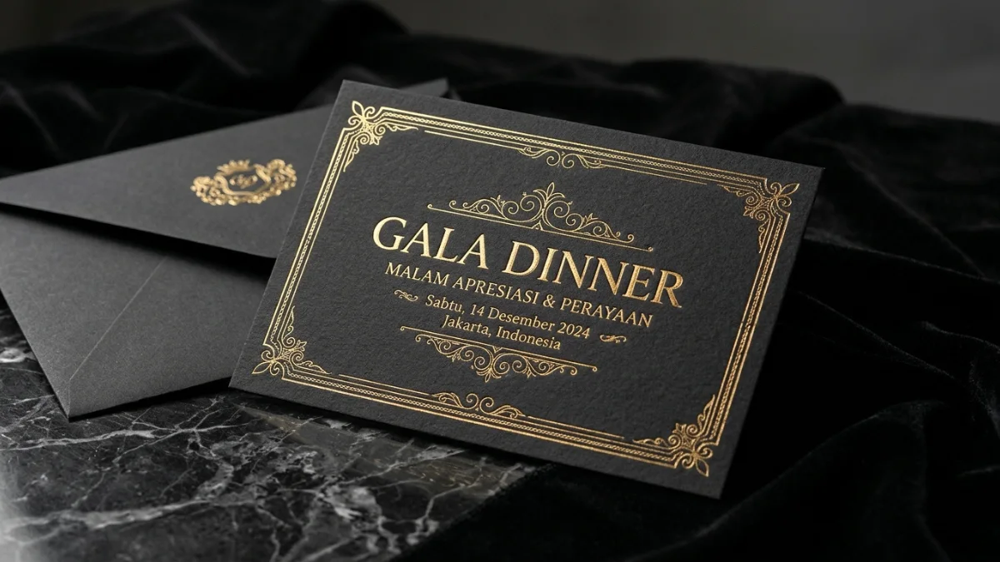
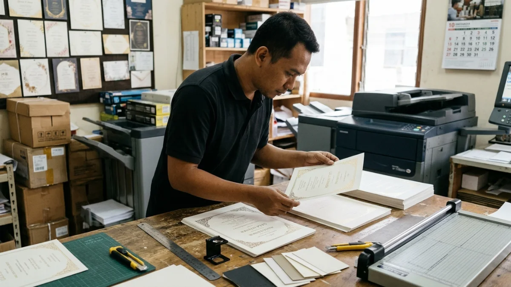

Contoh undangan gala dinner dengan finishing hot print foil emas pada kertas hitam premium, siap dikirim bersama amplop senada.Cetak undangan gala dinner adalah proses mencetak undangan resmi acara makan malam formal dengan desain, bahan, dan finishing premium agar tamu terkesan sejak menerimanya.
Ringkasan Inti
- Cetak undangan gala dinner mencakup desain, pemilihan bahan, finishing, produksi, dan pengiriman kartu undangan fisik.
- Pelaku industri MICE menilai prospek kuartal IV-2026 masih positif, sehingga persaingan jadwal produksi percetakan dapat meningkat menjelang akhir tahun.
- Elemen wajib undangan mencakup nama acara, tanggal, waktu, lokasi, dress code, dan kontak RSVP.
- Biaya ditentukan oleh jumlah lembar, jenis kertas, finishing, kompleksitas desain, dan tenggat produksi.
- Apa itu Cetak Undangan Gala Dinner?
- Mengapa Undangan Gala Dinner Masih Perlu Dicetak?
- Apa Saja Elemen Wajib dalam Undangan Gala Dinner?
- Bahan dan Finishing yang Cocok untuk Undangan Gala Dinner
- Alur Cetak Undangan Gala Dinner dari Desain sampai Pengiriman
- Faktor yang Memengaruhi Biaya Cetak Undangan Gala Dinner
- Kesalahan Umum dalam Cetak Undangan Gala Dinner
- Tips Memilih Percetakan Undangan Gala Dinner
- Perbandingan Undangan Cetak dan Undangan Digital untuk Gala Dinner
- Kesimpulan
- FAQ
Apa itu Cetak Undangan Gala Dinner?
Cetak undangan gala dinner adalah layanan percetakan yang memproduksi kartu undangan fisik untuk acara makan malam formal, lengkap dengan desain, kertas, dan finishing khusus.
Gala dinner adalah acara makan malam formal yang biasanya diselenggarakan untuk penggalangan dana, penyerahan penghargaan, perayaan pencapaian perusahaan, peluncuran produk, atau penutupan konferensi.
Peserta yang menghadiri acara tersebut pada umumnya dibatasi jumlahnya dan menerima undangan secara eksklusif, sehingga dokumen undangan menjadi kesan awal yang turut mempengaruhi persepsi publik terhadap acara tersebut.
Undangan gala dinner yang dicetak ditujukan bagi panitia, event organizer, perusahaan, yayasan, asosiasi profesi, dan hotel yang ingin memberi pengalaman fisik kepada tamu penting. Kartu ini umumnya disiapkan beberapa minggu sebelum acara agar tamu punya waktu mengatur jadwal.
Manfaat utama undangan cetak adalah kesan eksklusif, kemudahan disimpan sebagai pengingat, dan peluang menampilkan identitas penyelenggara melalui bahan serta finishing.
Batasannya, undangan cetak membutuhkan waktu produksi, biaya per lembar yang lebih tinggi dibanding undangan digital, dan data yang tidak dapat diubah setelah dicetak.
Risiko terbesarnya adalah kesalahan informasi, seperti tanggal atau lokasi, yang baru disadari setelah seluruh lembar selesai diproduksi.
Mengapa Undangan Gala Dinner Masih Perlu Dicetak?
Undangan gala dinner cetak masih relevan karena kartu fisik memberi kesan eksklusif, mudah disimpan, dan menunjukkan keseriusan penyelenggara kepada tamu penting.
Aktivitas acara korporasi di Indonesia masih menunjukkan arah positif. General Manager Indonesia Convention Exhibition BSD menyatakan pada 12 Oktober 2026 bahwa bisnis MICE memasuki kuartal IV-2026 dengan prospek yang masih cukup positif, mencakup pameran, konferensi, rapat, dan acara korporasi.
Sebagai gambaran skala kegiatan, Indonesia Business Event Mart 2026 di Jakarta mempertemukan 92 peserta pameran dengan 220 hosted buyers dari 37 negara pada Juli 2026, menurut laporan Bisnis.com. Ketika banyak acara berlangsung bersamaan, penyelenggara perlu cara tampil yang berbeda, dan kartu fisik yang rapi dapat membantu.
Dari sisi efektivitas media cetak, kompilasi statistik direct mail 2026 dari directmail.io yang mengutip laporan DMA dan ANA mencatat tingkat respons surat kepada daftar pelanggan sekitar 4,9 persen.
Angka ini berasal dari konteks pemasaran di Amerika Serikat dan bukan khusus undangan gala dinner. Gunakan angka tersebut sebagai gambaran umum, bukan jaminan hasil.
Apa Saja Elemen Wajib dalam Undangan Gala Dinner?
Undangan gala dinner wajib memuat nama acara, penyelenggara, tanggal, waktu, lokasi, dress code, kontak RSVP, serta batas konfirmasi agar tamu dapat hadir dengan siap.
Berikut elemen yang sebaiknya selalu ada pada kartu undangan gala dinner:
- Nama acara dan tema, ditampilkan paling menonjol.
- Nama penyelenggara beserta logo resmi.
- Hari, tanggal, dan tahun pelaksanaan.
- Waktu registrasi dan waktu acara dimulai.
- Lokasi lengkap, termasuk nama hotel, nama ruangan, dan kota.
- Dress code yang ditulis eksplisit, misalnya black tie atau formal dengan sentuhan batik.
- Kontak RSVP dan batas konfirmasi kehadiran.
- Identitas tamu atau delegasi institusi apabila surat undangan telah disesuaikan secara personal.
Elemen opsional meliputi QR code konfirmasi, peta lokasi, informasi parkir atau valet, dan kartu sisipan rundown. Gunakan bahasa resmi, ringkas, dan konsisten. Panduan tata letak lebih rinci tersedia dalam artikel tentang desain undangan gala dinner.
Bahan dan Finishing yang Cocok untuk Undangan Gala Dinner
Undangan gala dinner umumnya memakai kertas tebal berkarakter premium seperti art carton atau kertas tekstur, dengan finishing seperti hot print, emboss, atau spot UV.
Kertas menentukan kesan pertama saat kartu dipegang. Art carton menghasilkan warna tajam, ivory memberi nuansa klasik, dan kertas tekstur menghadirkan sentuhan yang khas.
Ketebalan kertas umumnya berada di kisaran 250 gsm ke atas, meski angka ini dapat bervariasi menurut jenis kertas dan kebijakan percetakan.
Finishing yang lazim dipakai antara lain:
- Hot print foil untuk kilau metalik pada logo dan judul.
- Emboss atau deboss untuk efek timbul atau cekung tanpa tinta.
- Spot UV untuk area mengilap pada latar doff.
- Die cut untuk bentuk potongan khusus.
Batasi finishing pada satu atau dua teknik agar kartu tetap terbaca dan biaya terkendali. Perbandingan jenis kertas dan gramasi dibahas dalam artikel bahan kertas undangan gala dinner.

Proses pengecekan mutu hasil cetak undangan gala dinner di meja produksi percetakan sebelum tahap finishing dan pengemasan.Alur Cetak Undangan Gala Dinner dari Desain sampai Pengiriman
Alur cetak undangan gala dinner meliputi penentuan konsep, penyusunan data, desain, proof, produksi, pengecekan mutu, dan pengiriman yang dijadwalkan sebelum tanggal acara.
Tahapan yang umum ditempuh panitia adalah sebagai berikut:
- Tentukan konsep, tema, jumlah tamu, dan anggaran undangan gala dinner.
- Kumpulkan data final: nama acara, tanggal, lokasi, dress code, kontak RSVP, serta daftar nama tamu.
- Buat desain atau serahkan materi ke tim desain percetakan.
- Minta sampel kertas dan finishing untuk dinilai langsung.
- Periksa proof cetak dan setujui secara tertulis setelah seluruh data dicek ulang.
- Lakukan produksi, lalu periksa mutu pada hasil akhir sebelum dikemas.
- Kirim undangan melalui kurir, pos, atau antar langsung sesuai jadwal.
Durasi tiap tahap dapat bervariasi tergantung kerumitan finishing dan antrean produksi. Pada umumnya, pemesanan beberapa minggu sebelum jadwal kirim memberi ruang untuk revisi dan perbaikan.
Faktor yang Memengaruhi Biaya Cetak Undangan Gala Dinner
Biaya cetak undangan gala dinner dipengaruhi jumlah lembar, jenis kertas, teknik finishing, kompleksitas desain, kelengkapan amplop, tingkat personalisasi, dan tenggat produksi.
Jumlah lembar memengaruhi biaya per unit karena biaya persiapan produksi dibagi lebih banyak kartu. Jenis kertas dan gramasi menentukan harga bahan, sedangkan finishing seperti hot print foil dan emboss menambah proses serta biaya cetakan khusus. Desain yang rumit, ukuran tidak standar, dan amplop khusus juga menambah biaya.
Personalisasi, seperti nama tamu yang dicetak satu per satu, menambah waktu produksi. Pesanan dengan tenggat sempit umumnya dikenai biaya percepatan.
Karena harga dapat bervariasi, mintalah penawaran tertulis dengan spesifikasi lengkap. Rincian komponen dan cara menghitung anggaran dibahas dalam artikel biaya cetak undangan gala dinner.
Kesalahan Umum dalam Cetak Undangan Gala Dinner
Kesalahan umum dalam cetak undangan gala dinner meliputi salah data, tulisan terlalu kecil, kertas terlalu tipis, jadwal mepet, dan tidak meminta proof tertulis.
- Salah data: tanggal, jam, atau nama lokasi keliru karena tidak ada pengecekan ulang oleh dua orang berbeda.
- Tulisan terlalu kecil: informasi penting sulit dibaca, terutama di bawah pencahayaan redup.
- Kertas terlalu tipis: kartu terasa lemas dan mengurangi kesan formal.
- Finishing berlebihan: banyak teknik digabung sehingga teks sulit dibaca dan biaya membengkak.
- Jadwal mepet: tidak ada waktu revisi, dan pesanan mendadak membatasi pilihan finishing.
- Tidak meminta proof tertulis: panitia sulit menuntut perbaikan bila ada ketidaksesuaian.
- Tidak menyiapkan cadangan: tidak ada lembar tambahan untuk tamu baru atau alamat yang keliru.
Pencegahan paling efektif adalah menyetujui proof secara tertulis dan menyiapkan cadangan lembar.
Tips Memilih Percetakan Undangan Gala Dinner
Percetakan undangan gala dinner yang baik menunjukkan portofolio acara formal, menyediakan sampel fisik, memberi proof sebelum produksi, dan menjelaskan estimasi waktu secara tertulis.
- Pertama, lihat portofolio undangan acara formal, bukan hanya cetakan harian.
- Kedua, minta sampel fisik dengan kertas dan finishing yang sama dengan pesanan Anda.
- Ketiga, pastikan percetakan menjelaskan proses revisi, termasuk berapa kali revisi sudah termasuk dalam harga.
- Keempat, bandingkan penawaran dengan spesifikasi identik, meliputi ukuran, kertas, finishing, jumlah, dan estimasi waktu.
- Kelima, tanyakan kapasitas produksi pada periode ramai, sebab kuartal akhir tahun sering padat oleh acara korporasi.
- Keenam, konfirmasi apakah layanan pengemasan dan pengiriman tersedia, terutama bila tamu tersebar di beberapa kota.
Percetakan yang transparan pada hal-hal tersebut biasanya lebih mudah diajak bekerja sama.
Perbandingan Undangan Cetak dan Undangan Digital untuk Gala Dinner
Undangan cetak unggul untuk kesan eksklusif dan kenang-kenangan, sedangkan undangan digital unggul pada kecepatan dan biaya; banyak panitia gala dinner menggabungkan keduanya.
| Aspek | Undangan Cetak | Undangan Digital |
|---|---|---|
| Kesan | Eksklusif dan berwujud | Praktis dan modern |
| Waktu persiapan | Lebih lama | Cepat |
| Biaya per tamu | Umumnya lebih tinggi | Umumnya lebih rendah |
| Revisi setelah dikirim | Sulit | Mudah |
| Pelacakan RSVP | Perlu QR code atau kontak | Mudah dilacak |
Strategi gabungan lazim dipakai: kartu cetak untuk tamu utama dan undangan digital sebagai pengingat atau saluran RSVP. Pendekatan ini menjaga kesan eksklusif sambil mempermudah pendataan kehadiran.
Kesimpulan
Cetak undangan gala dinner berhasil bila data akurat, bahan sesuai tema, finishing secukupnya, dan jadwal produksi longgar.
Mulailah dari daftar tamu dan anggaran, minta sampel fisik, setujui proof secara tertulis, lalu siapkan lembar cadangan.
Kombinasikan kartu cetak untuk tamu utama dengan kanal digital untuk RSVP agar proses lebih efisien.
FAQ